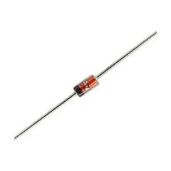
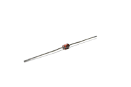
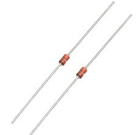

Welcome to ElectroSpecs | Explore Electronics Components | Learn & Build 🚀

THICK FILM SURFACE MOUNT RESISTOR

THIN FILM SURFACE MOUNT RESISTOR

METAL FILM SURFACE RESISTOR
HIGH POWER SURFACE MOUNT RESISTOR
CURRENT SENSE(SHUNT) SURFACE MOUND RESISTOR